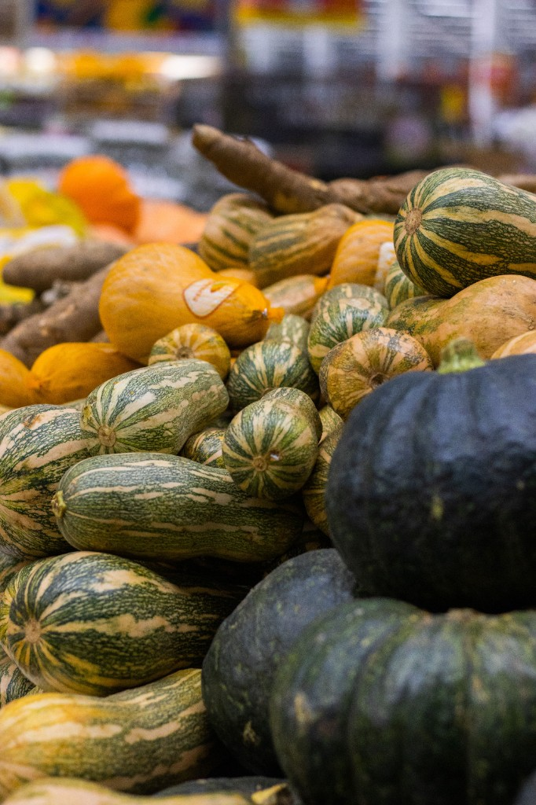

Squash (Cucurbita spp.)
First Cultivated: ~8000 BCE
Optimal Climate: Warm growing season with frost-free nights
Water Requirement: 16 to 22 inches annually
Squash may be the earliest domesticated plant in Mesoamerica. Broad leaves shaded soil and suppressed weeds in polyculture fields, while fruit and nutrient-rich seeds provided calories through winter storage. Pumpkins, zucchini, and winter squash varieties descend from these New World crops.